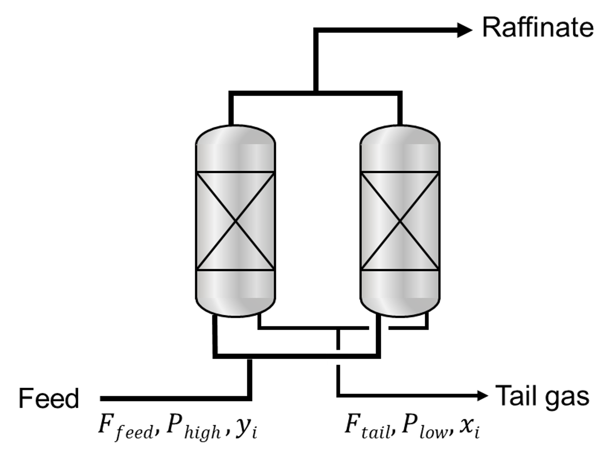

Ideal PSA simulation module (pyAPEP.simide)
This module enables ideal PSA simulation using isotherm function and operating conditions.
First, import simide into Python after installation.
# Package import
import pyapep.isofit as isofit
import pyapep.simide as simide
- Then users need to 5-steps to simulate.
Mixture isotherm function definition
Ideal column definition
Feed condition setting
Operating condition setting
Simulation run
In next section, detailed steps are explained.
Usage
1. Mixture isotherm function definition
Here, we define the mixture isotherm function with pyAPEP.isofit.
# Generate dummy data
P = [2, 3, 4, 5]
q_comp1 = [1, 2, 3, 4] # Gas adsorption of component 1
q_comp2 = [1, 5, 7, 10] # Gas adsorption of component 2
# Define pure isotherm of each component
iso1, param1, fntype1, err1 = isofit.best_isomodel(P, q_comp1)
iso2, param2, fntype2, err2 = isofit.best_isomodel(P, q_comp2)
# Mixture isotherm function definition
# iso1 and iso2 == Pure isotherm function of each component.
iso_mix = lambda P,T: isofit.IAST([iso1, iso2], P, T)
2. Ideal column definition
# The number of components
num_comp = 2
# Ideal column definition
Column1 = simide.IdealColumn(num_comp, iso_mix )
print(Column1) # Chek input condition
3. Feed condition setting
P_feed = 8 # Feed presure (bar)
T_feed = 300 # Feed temperature (K)
y_feed = [1/4, 3/4] # Feed mole fraction (mol/mol)
Column1.feedcond(P_feed, T_feed, y_feed)
print(Column1)
4. Operating condition setting
P_high = 8 # High pressure (bar)
P_low = 1 # Low pressure (bar)
Column1.opercond(P_high, P_low)
print(Column1)
5. Simulation run
x_ext = Column1.runideal()
print(x_ext) #return tail gas composition of each gas
Class documentation
This module contains objects to characterize the pure-component adsorption isotherms from experimental or simulated data. These will be fed into the IAST functions in pyiast.py.
- class pyAPEP.simide.IdealColumn(n_comp, isotherm_fun=None)[source]
A IdealColumn class is instantiated by passing it the pure-component adsorption isotherm in the form of a Pandas DataFrame. The least squares data fitting is done here.
- Parameters:
n_comp – The number of components in the PSA system.
isotherm_fun – Mixture isotherm function (could be optain from
pyAPEP.isofit)
- Return type:
- __weakref__
list of weak references to the object (if defined)
- feedcond(P_feed, T_feed, y_feed)[source]
Input feed condtions
- Parameters:
P_feed – Feed pressure (bar).
T_feed – Feed temperature (K).
y_feed – Feed composition (mol/mol)
- Returns:
- isofunct(n_comp, isotherm_fun)[source]
Given stored model parameters, compute loading at pressure P.
- Parameters:
pressure – Float or Array pressure (in corresponding units as df in instantiation)
- Returns:
predicted loading at pressure P (in corresponding units as df in instantiation) using fitted model params in self.params.
- Return type:
Float or Array.
Theory
{kind=link}
Ideal PSA process simulations exclude non-ideal factors deteriorating the separation performances of PSA processes such as thermal effect and pressure gradient along the adsorption column. Since the computation of the non-ideal impact requires most of the computational cost, the ideal PSA process model (shortcut method) drastically reduces the computation time from several days to less tha one second, estimating the theoretical potential of each adsorbent in a PSA process. A few assumptions are made for the idealization of the PSA process.
Extremely fast mass & heat transfer between gas and solid phases
The operation of the ideal PSA process is isothermal by perfectly controlling temperature.
The operation cycle consists of two steps: adsorption and desorption steps.
During the adsorption step, 100% of raffinate gas is produced and the capacity of the adsorbent bed is fully used with perfectly controlled step time.
During the desorption step, the detrimental influence of the void fraction on the tail gas purity is ignored.
Uniform pressure distribution is assumed all along the adsorbent bed of the PSA process.
In ideal PSA simulations, the calculated tail gas composition must satisfy the conditions. To determine the tail gas composition (\(x\)), an initial guess (\(x_{guess}\)) should be given. The optimization problem is solved to minimize the difference between the calculated tail gas composition and the initial guess.
The gas uptake (\(q\)) is obtained using below equations.
\[q_{1,h}, q_{2,h} = f_{IAST} \left(P_{h}, T, y \right )\]\[q_{1,l}, q_{2,l} = f_{IAST} \left(P_{l}, T, x_{guess} \right )\]
where \(f_{IAST}\) is the mixture isotherm function driven by the pure isotherm function for each component, \(P\) and \(T\) refer to the pressure and temperature, and \(h\) and \(l\) denote high and low, respectively. The tail gas composition was then calculated using the following equations:
\[\Delta q_i = q_{i,h} - q_{i,l} \; \textrm{for} \, i=1\,\textrm{to} \, n\]\[x_i = \frac{\Delta q_i}{\sum_{i=1}^{n} \Delta q_i}\]
Because the composition of the tail gas is calculated through an ideal PSA simulation, the product recovery may be easily derived. Product recovery is the ratio of the flow rate of the produced product to the feed flow rate and is defined as shown in below.
\[R_{P} =\frac{F_{P, raffinate}}{F_{P, feed}}= \frac{F_{P, feed}-F_{P, tail}}{F_{P, feed}}\]
where \(R\) and \(F\) are the product recovery and flow rate, respectively, and \(P\) denotes the product components. The ideal PSA process assumes 100 % purity of the product produced in the raffinate. Therefore, the mass balance equation for the impurity component is expressed using equation below.
\[F_{tail} = \frac{y_{I}}{x_{I}} \cdot F_{feed}\]
where \(x\) and \(y\) are the mole fractions of the tail gas and feed flow, respectively, and \(I\) denotes the impurity component. By substituting for the mass balance described above into the recovery equation, product recovery can be constructed as follows:
\[R_{P} = \frac{(1-y_{I})F_{feed} - (1-x_{I})F_{tail}}{(1-y_{I})F_{feed}} = 1 - \frac{y_{I}(1-x_{I})}{x_{I}(1-y_{I})}\]